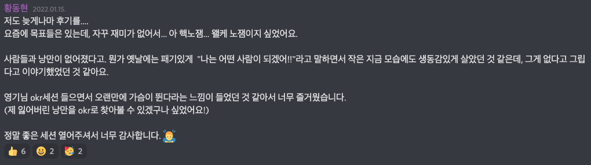

Table of Contents
AC2 그룹 내에서 홍영기님의 Personal OKR 세션이 있어, 냉큼 신청해서 듣고왔습니다.

그 이후에, AC2 그룹 내에서 서로 Personal OKR을 리뷰해주고 하는 활동들이 있었는데, 당시에는 정신이 없던 시기라 부담이되어 참여하지는 않았는데요.
이후에 흘러가는 삶의 패턴을 지켜보다보니, 의식해서 사는 삶이 아니라 흘러가는 삶을 살 것 같다는 두려움이 들었습니다. 그래서 어설프겠지만, 저만의 지표를 세워볼겸 Personal OKR을 작성해봤습니다.
OKR을 작성할 때, 김창준님의 영리하나 열정이 없다 라는 글을 참고했습니다. 그 외에 창준님의 조언도 참고했습니다.
예를 들어 OO님의 “내 블로그 글 중 5개가 조회수 1000회, SNS 리액션 150회, 인용 50회를 달성한다”(A)를 갖고 생각할 때, 이렇게 상상해 보는 겁니다.
- A를 완벽히 달성했지만 불만족하는 경우를 상상해 본다. 적어도 3가지.
- A를 거의 달성하지 못했지만 만족하는 경우를 상상해 본다. 적어도 3가지.
그 후에 A를 수정한다. 만약 A에 큰 수정이 일어난다면 내가 처음 만든 A는 초점이 잘못된 것일 확률이 높다(특히 측정하기 쉬운 걸 측정하게 되는 경향면에서).
2022년 OKR
2022년 이루고 싶은 목표 한가지(Objective)
[목표]
- 나를 찾아보자(feat. 윌리를 찾아서)
[이 목표가 중요한 이유]
- 본격적으로 일을 시작한 이후, 일 중심적으로 살아왔다. 이를 통해 이룬 성과들이 없진 않았지만 가족, 친구들과의 관계, 건강, 나만의 서브 컬쳐가 없는 것 등 잃는 것도 많았다.
- 특히 최근에 “나는 왜 일을 하고있는가?”에 대한 의문이 생겼다.
- 의문이 생긴 이유: 사회 초년생 때 개인적으로 가지고있던 사회적 지위, 실력의 증명들과 같은 결핍들이 어느정도 해소되었다고 느끼면서 앞으로는 내가 쫓아야하는 대상이 사라졌다.
- 들었던 감정: 무기력감, 회의감, 공허함을 느꼈다. 지금까지 살아왔던 내 발자취들이 “나”라는 사람의 고유한 색이 아닌 사회의 압력이 만들어낸 평범한 발자취로 보였다.
- 원하는 것: 겉으로 보이기에는 평범한 발자취처럼 보이더라도, 나만의 의미가 있었으면 좋겠다. 그게 일종의 탐색이어도 좋고, 깊게 파고드는 것이어도 크게 상관없는 것 같다.
[목표를 이루기 위해 필요한 결과(Key Result)]
- 안 해본 활동을 탐색하고 내가 어떤 기분이 드는지 확인했다. 이를 통해 내가 무엇을 좋아하고 무엇을 싫어하는지에 대해서 알고있다. (탐색)
- AS IS : 지금은 주어진 삶에서 쳇바퀴를 돌리고있다. 회사-집-회사-집?
- TO BE: 의식적으로 새로운 것이 무엇이 있는지 학습하고 시도하고있다. 그리고 그 시도에서 내가 무엇을 느끼는지 확인하고있다.
- 6개 이상의 접하지 않았던 경험들을 의식적으로 했다.
- CS / ML 분야에서 하나 이상의 이론이나 실무적인 프로젝트를 깊게 탐구하고있다.
- 완벽히 달성했지만 불만족하는 경우를 상상해 본다. 적어도 3가지.
- 새로운 활동들로부터 새로운 감정들을 느끼지 못할 때,
- 새로운 이론이나 실무적인 프로젝트가 내 커리어 혹은 미래에 도움이 되지 못하다고 느낄 때
- 새로운 경험들을 했음에도 공허하거나 무기력한 감각이 사라지지 않을 경우
- A를 거의 달성하지 못했지만 만족하는 경우를 상상해 본다. 적어도 3가지.
- 환경의 변화로 지금 하고있는 것으로만 충분히 동기부여를 느낄 때
- 기존의 환경에서 새로운 경험들을 하게 되어서 내 감정들이 더 다양해질 때
- 기존에 가지고있는 지식으로도 충분히 성과를 낼 수 있다는 자신감이 들 때
- 건강하기
- AS IS: 건강관기를 위한 운동을 안 함, 춤을 추었으나 디스크 판정 이후에는 쉬고있고, 다시 생각해보는 중(허리 건강에 좋을까?…)
- TO BE: 춤보다는 조금 더 신체적인 관리 측면에서 식단과 운동을 하고있음
- 체형이 마른 근육질로 변화했다. 혹은 내 스스로가 충분히 건강하다고 느끼고있다.
- 평소에 먹는 식단이 건강식 위주이고, 3개월 마다 치아 관리 및 치실 습관이 있다.
수면시간이 평균 8시간이고, 아침에 일어나면 피로감을 덜 느껴 에너지 레벨이 높다.- 변경: 잠자기 전, 아침에 일어났을 때 이전과 다르게 에너지 레벨이 꽤 높다.
- 완벽히 달성했지만 불만족하는 경우를 상상해 본다. 적어도 3가지.
- 건강에 너무 집중해서 다른 중요한 것을 못하는 경우. 커리어, 관계 등
- 먹고싶은 것들을 편하게 먹지 못하는 경우, 여자친구, 가족, 친구들과 편하게 술약속 못하는 경우?
- 수면, 건강에 너무 엄격해서 이를 어겨야하는 경우가 필수임에도 융통성 없을 때
- A를 거의 달성하지 못했지만 만족하는 경우를 상상해 본다. 적어도 3가지.
- 좋은 몸매를 굳이 만들 필요는 없을 듯. 그게 나에게 중요한 것은 아닌 것 같다.
- 수면시간이 꼭 8시간일 필요는 없다. 내가 활기찬 느낌이 들고, 에너지 레벨이 좋으면 상관 없을 것 같다.
- 명상같은 것을 꾸준히 해서 에너지 레벨 관리가 잘 되면 그것도 크게 상관 없을 것 같다.
- 새로운 사람 혹은 기존의 관계에서 관계를 시작하고 잘 만들어가는 방법에 대한 한가지 이상의 노하우를 가지고있고, 그 사람들에게 영감을 줄 수 있게 도울 수 있다.
- AS IS: AC2에서 배웠던 것 외에는 무의식적으로 하고있음
- TO BE: 조금 더 의식적으로 목표를 새우고 측정하고있음, 그리고 관련된 공부도 하고있음
- NOTE: 지금 작성하는 순간에는 크게 와닿지는 않은데, 가끔 대화를 하던 도중 상대방이 스스로 고민하던 것들에 대한 해결책을 얻는 모습(유레카 모먼트)을 보면 즐거울 때가 있어서 그 이후에는 어떨지 모르겠음
완벽히 달성했지만 불만족하는 경우를 상상해 본다. 적어도 3가지.
- 내 에너지가 너무 타인에게 집중되어서 고갈되었다고 느꼈을 때
- 대화 스타일이나 관점이 코칭이나 상담쪽에 고정되어버렸을 때
- 업무와 연관짓지 못할 때
A를 거의 달성하지 못했지만 만족하는 경우를 상상해 본다. 적어도 3가지.
- 별도의 액션을 하지 않았음에도 관계에서 오는 에너지가 충만하다고 느낄 때
- 지금 관성으로도 관계에서 충분한 성과를 낼 수 있을 때
- 새로운 통찰이나 지식들을 얻었을 때
경제나 돈에 대해서 더 이상 노동자의 관점이(돈 많은게 짱이야. 집있는게 짱이야?) 아니라 새로운 관점을 갖고있다.
AS IS: 그냥 무지성 투자. 부동산도 그냥 하자고하는데로.. 내가 전문가는 아니니까..
TO BE: 기업에 대해서, 투자에 대해서, 현금 흐름에 대해서 대략적으로 거시적인 나만의 관점을 가지고있다.
- 완벽히 달성했지만 불만족하는 경우를 상상해 본다. 적어도 3가지.
- 너무 많은 것들을 하다가 본업에 소홀히 했다.
- 현금흐름을 만들기 어렵거나 수익을 내기 어렵다는 판단이 들었을 때
- A를 거의 달성하지 못했지만 만족하는 경우를 상상해 본다. 적어도 3가지.
- 공부 없이도 현금 흐름 및 수익이 생겼을 때? (몰론 운이겠지만..)
- 다른 KR에서 성과를 냈을 때?
분기별 OKR
2~4 Quarter는 아직 먼 미래라서 별도의 OKR을 적어두진 않았다. 어차피 2022년 OKR이 있으니…
4월에 1 Quarter가 끝나고 회고를하면서 2, 3 Quarter를 작성할까 한다.
1 Quarter OKR
[목표]
- 건강을 찾고 새로운 탐험을 시작한다.
[목표가 중요한 이유]
- 지금까지 건강관리에 매우 소홀했다. 몸에 자잘자잘한 이상신호가 오고있고, 장기적인 관점에게 나에게 좋지 않다고 생각했다. 건강관리가 정신건강에도 영향을 주니까. 기초체력을 만드는게 중요하다고 생각한다.
- 집돌이가 되어서 주말에는 하루종일 침대에 누워서 생활한다. 집돌이가 되었다는게 부정적인 것은 아니나 공허함, 무기력감이 찾아왔다는게 중요한 것 같다. 새로운 변화를 만들어주면 이런 공허함, 무기력감이 사라지지 않을까?
[목표를 이루기 위해 필요한 결과(Key Result)]
- DL쪽 이론 공부를 열심히 하고있고, 관련된 블로그 포스팅을 어설프더라도 5편 이상 작성한다.
- 아마 DL 쪽의 Transformer나 시계열쪽에 대한 이론 공부이지 않을까 싶다. 딥러닝 기초 공부이기도 하고?
- 이전까지는 주로 엔지니어링 위주로해서 이론적으로는 손을 많이 놓고 살았다. 최근 새로 공부하는게 짜릿한 기분이 들었다. 옛날과 비슷한 희열감도 느꼈던 것 같고..
- 완벽히 달성했지만 불만족하는 경우를 상상해 본다. 적어도 3가지.
- 주객이 전도된 상황. 블로그를 쓰기 위해서 공부하는 경우.
- 시간을 너무 뺏겨서 중요한 일을 하지 못한 경우
- 마음의 여유가 많이 없어지는 상황
- A를 거의 달성하지 못했지만 만족하는 경우를 상상해 본다. 적어도 3가지.
- 블로그는 작성하지 못했지만, 스스로 이론이나 실무적인 지식을 깊게 탐구한 경우
- 건강, 관계에 있어서 충분히 에너지를 쏟으면서(균형을 지키면서) 실행한 경우
- 허리와 관련된 코어 운동을 일주일에 3번 정도 하고있다. 또한 허리에 좋지 않은 습관들 10개정도는 숙지하고있고, 신경쓰고있다.
- 완벽히 달성했지만 불만족하는 경우를 상상해 본다. 적어도 3가지.
- 운동이 너무 재미없고, 건강해진다는 느낌이 없다.
- 운동에 시간을 너무 뺐겨서 다른 일을 못하는 경우
- A를 거의 달성하지 못했지만 만족하는 경우를 상상해 본다. 적어도 3가지.
- 건강과 업무의 균형을 잘 지키면서 했을 때
- 몇개의 습관이라도 완벽히 익혔을 때,
- 커리어와 관련되지 않은 새로운 탐색을 2개 이상하고있다.
- 완벽히 달성했지만 불만족하는 경우를 상상해 본다. 적어도 3가지.
- 너무 많은 일을 펼쳐서 정작 중요한 일을 못할 때
- 탐색한 결과들이 나에게 별 감흥이 없을 때, 시간낭비라는 생각이 들 때
- 에너지를 너무 많이 뺏길 때
- A를 거의 달성하지 못했지만 만족하는 경우를 상상해 본다. 적어도 3가지.
- 그냥 새로운 탐색을 안하고 자신만의 시간(집에서 쉬는 것 등) 너무 좋고 편할 때
- 모종의 이유로 무기력감과 공허함이 사라졌을 때
- 잠자기 전, 아침에 일어났을 때 이전과 다르게 에너지 레벨이 꽤 높다.
- 전체 OKR의 수면시간 변경사항에 적혀있어 생략한다.
2 Quarter OKR
[목표]
- 관계에 있어서 새로운 시도를 해본다. 대화법 변경 등
3 Quarter OKR
[목표]
- 경제적인 관점에서 새로운 시각을 얻는다.
4 Quarter OKR
[목표]
- 커리어를 제외하고 새로운 탐험을 더 해본다.